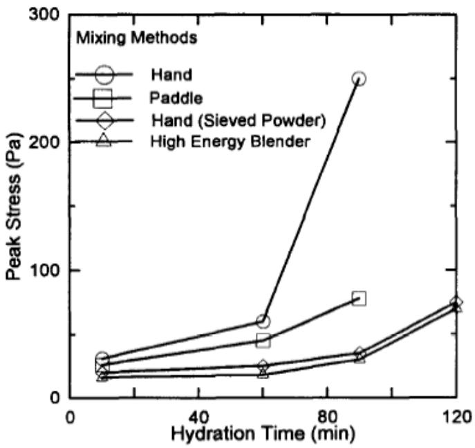

Low-Permeability Concrete
Low-permeability concrete is a durable construction material defined by a dense microstructure that significantly restricts the ingress of fluids and ions, thereby protecting the reinforcement from corrosion and chemical attack. The fundamental mechanism for this resistance lies in the refinement of the pore structure within the cement paste, which minimizes capillary porosity and limits the pathways available for fluid transport [1] [2] [3]. Achieving this dense matrix requires precise control over mix proportions, particularly maintaining a low water-to-cement ratio and ensuring sufficient paste volume to fully coat aggregate particles [2]. Durability is further enhanced through the use of supplementary cementitious materials that refine pore connectivity via pozzolanic reactions, as well as internal curing techniques that sustain hydration and reduce autogenous shrinkage [4] [5] [6] [7]. The resulting material properties are heavily dependent on proper mixing to ensure homogeneity and adequate curing to facilitate complete chemical reactions within the cement matrix [8] [9].
CP Tech Center reports covering “Low-Permeability Concrete” also include the following subtopics: Electrical Conductivity of Concrete, Sorptivity, Surface Resistivity, and Wenner Probe / Surface Resistivity.
Low-permeability concrete is defined by its ability to restrict the movement of fluids and ions through a dense pore structure. Sorptivity quantifies the capillary absorption rate, directly reflecting this reduced connectivity of fine pores and resistance to water ingress. Electrical Conductivity measures ion mobility within the pore solution to assess moisture content and curing effectiveness, serving as a critical nondestructive indicator of transport properties. Surface Resistivity acts as a proxy for chloride penetration resistance by quantifying how well the material impedes ion flow through its pore solution. The Wenner Probe / Surface Resistivity method applies these electrical resistance measurements to evaluate low-permeability concrete without damaging the structure. Electrical Conductivity of Concrete quantifies ion mobility within the pore solution to directly assess moisture content and curing effectiveness, thereby serving as a critical nondestructive indicator of the transport properties that define low-permeability performance.
Sources (14)
Sub-concepts (4)
Fundamentals
The development of low permeability in concrete relies fundamentally on achieving a dense microstructure through complete cement hydration, which is facilitated by maintaining adequate moisture and temperature during the early curing phase [8]. This densification process reduces the connectivity and volume of internal pores, thereby limiting the pathways available for ion transport and fluid ingress that characterize permeability.
The following figure illustrates how these microstructural changes manifest in measurable conductivity curves and boundaries.
 Conductivity Curves and Boundaries [8]
Conductivity Curves and Boundaries [8]
The figure plots electrical conductivity against time for concrete specimens subjected to different curing regimes, including wet curing, oven curing, and various specific cases. At the initial stage of cement hydration, the spaces between cement particles are generally filled with mixing water, leading to a rapid increase in conductivity due to ion dissolution and mobility. As hydration progresses, the formation of an envelope around unhydrated cement grains leads to a decrease in both the number and mobility of ions, causing the electrical conductivity to drop.
Key findings
- Observed that internal curing using lightweight fine aggregate significantly enhances permeability resistance by sustaining hydration, refining pore structure, and mitigating self-desiccation in low water-to-cement ratio systems [5] [6] [7].
- Identified a critical gap in current ASTM standards for curing compounds, revealing that they lack precision regarding field variables and that sorptivity serves as the most sensitive indicator of near-surface microstructure changes [8].
- Demonstrated that low-permeability concrete durability in harsh climates is critically dependent on maintaining a uniform air void system, with excessive spacing or clustering compromising freeze-thaw resistance and accelerating deterioration mechanisms like alkali-silica reactivity [10].
- Evaluated the two-stage mixing process, finding that while it enhances uniformity and reduces permeability through increased shear energy, it presents a trade-off where air entrainment becomes less effective due to fine particle absorption [9].
- Revealed that freezing-thawing durability without air entrainment is critically dependent on achieving extremely low water-to-binder ratios to eliminate freezable water, with specific limiting thresholds varying by cementitious material composition [1].
- Measured that increasing cementitious content beyond the minimum volume required to fill aggregate voids paradoxically increases chloride penetrability and air permeability because the paste matrix is more conductive than the aggregate [2].
- Reported a field shift toward performance-engineered mixtures that correlate early-age transport properties with long-term durability, allowing for reduced binder usage and lower carbon footprints without compromising pavement life [6].
Microstructural Drivers of Permeability
Evidence: 11 reports (9 primary)
The permeability of concrete is fundamentally governed by the volume, connectivity, and size distribution of pores within the cementitious matrix. Reducing the water-to-cement ratio decreases capillary porosity, thereby restricting the migration pathways for fluids and aggressive ions [2] [3]. The incorporation of supplementary cementitious materials refines this pore structure through pozzolanic reactions that consume calcium hydroxide and fill voids [4]. Internal curing techniques sustain hydration in low-water systems, further densifying the microstructure and reducing overall permeability [5] [6] [7].
The figure below illustrates how varying the water-to-cement ratio directly influences the permeability of both cement paste and concrete.
 Influence of w/c on the permeability of (a) cement paste and (b) concrete [2]
Influence of w/c on the permeability of (a) cement paste and (b) concrete [2]
The figure plots a curve showing that as the water-to-cement ratio increases, the permeability coefficient rises exponentially. Permeability increases for concrete with w/c greater than 0.42 as a result of the increased capillary volume (Mindess et al. 2003).
Research problem — Achieving low permeability requires resolving the trade-off between enhancing microstructural homogeneity and maintaining effective air entrainment, as fine particles in optimized mixes can absorb air-entraining agents and increase susceptibility to freeze-thaw damage [9]. The industry must overcome the misconception that higher cement content improves durability, recognizing that excess paste volume creates additional pathways for harmful agent ingress and increases shrinkage cracking risks [2]. Developing performance-based specifications is necessary to address the limitations of traditional strength metrics, which fail to account for fluid transport mechanisms and environmental variables that critically influence long-term durability [11] [3].
The figure below illustrates how varying water-to-cement ratios affect plain portland cement mixes with a constant content of 400 pcy.
 Cylindrical concrete specimens with varying water-to-cement ratios. [2]
Cylindrical concrete specimens with varying water-to-cement ratios. [2]
The image displays four cylindrical concrete cores arranged in a row, exhibiting distinct differences in surface texture and density from left to right. The visual progression from a highly porous, honeycombed structure on the left to a smoother surface on the right demonstrates how insufficient paste content leads to harsh mixtures that cannot be consolidated.
State of the art — The field has shifted from prescriptive strength-based specifications toward performance-engineered mixtures that directly measure transport properties like surface resistivity and sorptivity to optimize pore structure refinement [3]. Microstructural density is primarily achieved by optimizing the water-to-cementitious ratio and using ternary supplementary cementitious material blends, while internal curing techniques are increasingly adopted to ensure complete hydration in low-permeability systems [2] [4] [5]. Current best practices emphasize that durability results from a convergence of material reactivity control and construction process uniformity rather than single-factor improvements, requiring strict management of mixing sequences and curing efficiency [8] [10] [9].
The following figure illustrates how different mixing protocols influence the mechanical performance of these optimized systems.

Effect of mixing methods on peak stress of cement paste [9]The figure plots the evolution of peak stress over hydration time for four distinct mixing protocols: hand mixing, paddle mixing, hand mixing with sieved powder, and high-energy blending. Hand mixing and paddle mixing exhibit a rapid increase in peak stress compared to the other methods, which maintain lower stress levels for longer durations. The results suggest that high peak stresses could be caused by agglomerates of cement paste that did not get broken down during mixing.
Findings from the reports
- Demonstrated that curing compounds significantly enhance near-surface microstructure by retaining moisture, with sorptivity identified as the most sensitive indicator for detecting subtle pore structure changes compared to electrical conductivity [8].
- Revealed that low permeability and durability are compromised by multiple interacting mechanisms, including high water-cement ratios, dry absorptive aggregates depriving cement of hydration water, and alkali-silica reactivity initiating microcracking [10].
- Established that low-permeability concrete durability in harsh climates is critically dependent on maintaining a uniform air void system with adequate bubble spacing, as excessive spacing or clustering compromises freeze-thaw resistance and allows moisture ingress [10].
- Showed that two-stage mixing processes enhance homogeneity and reduce interfacial transition zone porosity, resulting in lower chloride permeability but presenting a trade-off where air entrainment becomes less effective due to fine particle absorption [9].
- Found that low-permeability concrete without air entrainment achieves freezing-thawing durability only when the water-to-binder ratio is sufficiently low to eliminate freezable water, with specific limiting thresholds varying by cementitious material composition [1].
- Demonstrated that low permeability alone does not guarantee freeze-thaw durability without air entrainment; it requires a combination of very low water-to-binder ratios and high compressive strength to eliminate freezable water [1].
- Determined that achieving low permeability requires a minimum paste volume relative to aggregate voids, but increasing cementitious content beyond this threshold paradoxically increases chloride penetrability and air permeability because the paste matrix is more conductive than the aggregate [2].
- Measured that incorporating lightweight fine aggregate for internal curing significantly enhances permeability resistance, evidenced by lower rapid chloride permeability values and higher surface resistivity readings compared to control mixes [5].
- Observed that internally cured concrete utilizing prewetted lightweight fine aggregate sustains cement hydration after setting, which refines the pore structure, reduces autogenous shrinkage cracking, and improves long-term transport properties [7].
- Reported that field practices have shifted toward performance-engineered mixtures that use early-age transport tests like surface resistivity to validate durability, allowing for optimized aggregate gradations and reduced cement usage without compromising long-term pavement life [3].
Novelty & rigor — Novel analytical frameworks have been developed to map compositional variability in ternary cementitious mixtures against performance metrics, providing systematic tools for optimizing durability and mitigating issues like alkali-silica reaction [4]. Research has introduced two-stage mixing processes that decouple hydration from aggregate contact to enhance interfacial transition zone homogeneity and mix uniformity, while also challenging conventional assumptions regarding the necessity of air entrainment by establishing specific water-to-binder thresholds for freeze-thaw durability [1] [9]. Methodological innovations include the use of lightweight fine aggregates and superabsorbent polymers for internal curing to sustain hydration without increasing the effective water content, as well as performance-engineered frameworks that link early-age transport resistance directly to long-term pavement durability [3] [7].
Reported values
| Parameter | Value | Context | Source |
|---|---|---|---|
| compressive strength | 88.0 MPa | Type IP cement without AEA (28-day) | [1] |
| durability factor | 94.3% | Type IP cement without AEA | [1] |
| porosity | 3.4% | I-FA (Type I cement with Class C fly ash) | [1] |
| porosity | 5% | IP concrete | [1] |
| rapid chloride permeability | 185 Coulombs | I-FA (durability factor above 85%) | [1] |
| rapid chloride permeability | 520 coulombs | Type IP cement without AEA | [1] |
| air system adequacy failure rate | 39% | cores with inadequate air system based on bubble spacing factor | [10] |
| compressive strength increase | 10 percent% | two-stage mixing process at 28 days compared to standard dry batch | [9] |
| m term | 0.47 | control section | [5] |
| m term | 0.52 | IC section | [5] |
| rapid chloride permeability | 10% | IC section compared to control section | [5] |
| service life extension | 18.7 years | IC section compared to control section | [5] |
| service life extension | about 20 years longer | IC section compared to control section | [5] |
| predicted rehabilitation interval | 20 years | conventional mixtures | [6] |
| predicted rehabilitation interval | 27 years | IC mixtures | [6] |
3 more distinct values omitted here; the full span-verified set is in the quantities sidecar.
Across the reviewed reports, microstructural drivers of permeability are collectively defined by a complex interplay between paste volume optimization, hydration completeness, and the integrity of the air void system, rather than any single material property. While increasing cementitious content beyond the minimum volume required to coat aggregate voids paradoxically increases permeability due to the higher conductivity of the paste matrix, optimizing this ratio is critical for minimizing transport pathways. Enhanced hydration and refined pore structures, achieved through methods such as internal curing with lightweight aggregates or two-stage mixing, consistently reduce permeability by mitigating self-desiccation and strengthening the interfacial transition zone. However, these microstructural improvements are often counterbalanced by trade-offs in air entrainment efficiency and aggregate absorption issues, which can compromise the uniformity of the void system essential for long-term durability. Ultimately, low permeability alone is insufficient to guarantee freeze-thaw resistance without air entrainment unless the mix design achieves extremely dense microstructures with very low water-to-binder ratios and high compressive strength. [1] [2] [3] [10] [9] [5] [6]
The following figure illustrates the composition of sealed and fully hydrated portland cement paste to provide a visual reference for these microstructural components.
 Composition of sealed and fully hydrated portland cement paste [2]
Composition of sealed and fully hydrated portland cement paste [2]
The figure plots the fractional volume of unhydrated cement, cement gel, capillaries, and empty capillaries against the water-cement ratio. Permeability increases for concrete with w/c greater than 0.42 as a result of the increased capillary volume (Mindess et al. 2003).
Implications — Designers must recognize that low permeability alone is insufficient for durability, requiring a synergistic combination with air entrainment and high compressive strength to resist freeze-thaw damage [1]. Mix proportions should target specific minimum paste volumes relative to aggregate voids rather than maximizing binder content, as excessive cementitious material degrades permeability resistance by increasing the conductive nature of the paste matrix [2]. Construction practices must rigorously control curing timing and environmental conditions when using curing compounds to prevent non-uniform membranes that fail to mitigate pore structure degradation [8].
The relationship between these durability metrics is illustrated in the following figure.
 Durability factor as a function of rapid chloride ion permeability [1]
Durability factor as a function of rapid chloride ion permeability [1]
The figure plots the Durability Factor against Charge Passed (Coulomb) to compare the performance of concrete mixes with and without Air Entraining Agents (AEA). Concrete samples containing AEA maintain a high durability factor regardless of their chloride permeability, whereas non-air-entrained mixes show a sharp decline in durability as permeability increases.
Limitations — Standardized testing protocols for curing compounds are unreliable due to high variability and an inability to account for environmental factors, leaving a gap in predicting real-world microstructural integrity [8]. Optimizing mixtures involves complex trade-offs where increasing paste volume can degrade transport properties, while methods like two-stage mixing may compromise air entrainment efficiency and internal curing requires difficult logistical handling of specific aggregates [2] [9] [6]. Durability is not an intrinsic property but depends on environmental exposure, meaning that low permeability alone does not guarantee freeze-thaw resistance without high compressive strength or air entrainment [1] [3].
Electrical and Physical Measurement Principles
Evidence: 3 reports (3 primary)
Research problem — The research addresses the challenge of quantifying how early-age electrical and physical properties, such as permeability and porosity, correlate with long-term durability risks in specialized concrete mixes like self-consolidating concrete [12]. It seeks to determine whether specific mix design strategies can effectively mitigate the elevated ion transport rates observed at early ages, thereby ensuring that electrical and physical measurements accurately predict long-term performance against harmful agent ingress [12].
Findings from the reports
- Petrographic examinations revealed that scaling damage in slag cement concrete was linked more closely to construction-related issues, such as retempering and elevated water-to-cement ratios, than to the specific cementitious mixtures used [13].
- The report showed that while Self-Consolidating Slip-Form Concrete (SFSCC) initially exhibited higher chloride ion permeability and porosity than conventional pavement concrete, its long-term permeability improved significantly over time to become comparable [12].
- The study indicated that replacing portland cement with granulated blast furnace slag substantially reduced the charge passed in rapid chloride permeability tests compared to control mixes, whereas limestone dust resulted in intermediate permeability values [12].
Novelty & rigor — Reproducible assessment of low-permeability concrete performance requires a standardized protocol combining rapid chloride permeability testing with surface chloride profile analysis to derive diffusion coefficients [13]. The methodology integrates petrographic examinations via scanning electron microscopy for air-void characterization and optical microscopy for microstructural ratios, ensuring consistent evaluation of ternary mixtures in field cores [13].
The following figure illustrates typical chloride profile test results obtained before and after scaling.
 Example of chloride profile test results (before and after scaling tests) [13]
Example of chloride profile test results (before and after scaling tests) [13]
The figure displays a plot of chloride concentration versus depth, showing data points that follow a decaying curve fitted to the experimental measurements.
Reported values
| Parameter | Value | Context | Source |
|---|---|---|---|
| surface resistivity | 26.8 kΩ·cm | cast samples at 56 days | [14] |
| RCP coulombs passed | 1,600 coulombs passed | youngest test specimen | [13] |
| RCP coulombs passed | < 600 coulombs passed | oldest test specimen | [13] |
Across the reviewed reports, electrical and physical measurement principles consistently demonstrate that supplementary cementitious materials significantly enhance concrete’s resistance to ion transport, as evidenced by reduced charge passed in rapid chloride permeability tests and lower surface resistivity values compared to conventional mixes. While early-age measurements often reveal higher porosity and permeability in specialized concrete types like self-consolidating slip-form concrete, longitudinal data indicates that extended curing periods allow these properties to converge with those of standard pavement concretes. Despite favorable permeability metrics derived from electrical and diffusion measurements, physical durability assessments reveal that construction practices such as retempering can still lead to scaling damage, indicating that low ion penetrability alone does not guarantee resistance to all forms of surface deterioration. [14] [13] [12]
Related concepts
In this hierarchy
- Parent: Transport Properties & Permeability
- Child: Electrical Conductivity of Concrete
- Child: Sorptivity
- Child: Surface Resistivity
- Child: Wenner Probe / Surface Resistivity
Related by shared evidence
- Supplementary Cementitious Materials — shares 13 reports
- Cement Hydration — shares 12 reports
- Fly Ash — shares 12 reports
- CP Tech Center Reports — shares 11 reports
- Cementitious Materials & Chemistry — shares 10 reports
- Concrete Materials & Mixtures — shares 10 reports
- Freeze-Thaw Durability — shares 10 reports
- Air Entraining Agent — shares 9 reports
Similar topics
- Freeze-Thaw Durability
- Transport Properties & Permeability
- Air Entraining Agent
- Supplementary Cementitious Materials
- Sulfate Attack
- Rapid Chloride Migration
- Wenner Probe / Surface Resistivity
- Durability & Materials-Related Distress
References
- K. Wang, G. Lomboy, and R. Steffes, "Investigation into Freezing-Thawing Durability of Low-Permeability Concrete with and without Air Entraining Agent," National Concrete Pavement Technology Center, Ames, IA, 2009. [Online]. Available: https://www.intrans.iastate.edu/wp-content/uploads/2018/03/low-permeability-concrete.pdf
- P. Taylor, F. Bektas, E. Yurdakul, and H. Ceylan, "Optimizing Cementitious Content in Concrete Mixtures for Required Performance," National Concrete Pavement Technology Center, Ames, IA, 2012. [Online]. Available: https://www.intrans.iastate.edu/wp-content/uploads/2018/03/taylor_ocm_w_cvr2.pdf
- J. Gross, J. Weiss, T. Ley, P. Taylor, N. Weitzel, T. Van Dam, G. Smith, and C. Jones, "Performance-Engineered Concrete Paving Mixtures," National Concrete Pavement Technology Center, Iowa State University, Ames, IA, Rep. TPF-5(368), 2022. [Online]. Available: https://www.intrans.iastate.edu/wp-content/uploads/2023/04/performance-engineered_concrete_paving_mixtures_w_cvr.pdf
- P. Tikalsky, V. Schaefer, K. Wang, B. Scheetz, T. Rupnow, A. St. Clair, M. Siddiqi, and S. Marquez, "Development of Performance Properties of Ternary Mixes, Phase 1," Center for Transportation Research and Education, Ames, IA, Rep. TPF-5(117), 2007. [Online]. Available: https://www.intrans.iastate.edu/research/completed/development-of-performance-properties-of-ternary-mixes-phase-1/
- P. Taylor, T. Hosteng, X. Wang, and B. Phares, "Evaluation and Testing of a Lightweight Fine Aggregate Concrete Bridge Deck in Buchanan County, Iowa," National Concrete Pavement Technology Center and Bridge Engineering Center, Ames, IA, Rep. TR-648, 2016. [Online]. Available: https://www.intrans.iastate.edu/wp-content/uploads/2018/03/Buchanan_LWFA_bridge_deck_w_cvr.pdf
- A. Daghighi, P. Taylor, H. Ceylan, and Y. Zhang, "Impacts of Internally Cured Concrete Paving on Contraction Joint Spacing Phase II," National Concrete Pavement Technology Center, Iowa State University, Ames, IA, Rep. TR-746, 2021. [Online]. Available: https://www.cptechcenter.org/wp-content/uploads/2021/05/IC_concrete_paving_impacts_phase_II_field_impl_w_cvr.pdf
- W. J. Weiss and L. Montanari, "Guide Specification for Internally Curing Concrete," National Concrete Pavement Technology Center, Ames, IA, Rep. TPF-5(286), 2017. [Online]. Available: https://www.intrans.iastate.edu/wp-content/uploads/2018/09/IC_guide_spec_w_cvr.pdf
- K. Wang, J. K. Cable, and G. Zhi, "Improved Pavement Curing Materials and Techniques: Part 1 (Phases I and II)," Center for Transportation Research and Education (CTRE), Iowa State University, Ames, IA, Rep. TR-451, 2002. [Online]. Available: https://www.cptechcenter.org/wp-content/uploads/2018/03/curing.pdf
- T. D. Rupnow, V. R. Schaefer, K. Wang, and B. L. Hermanson, "Improving PCC Mix Consistency and Production Rate through Two-Stage Mixing," Center for Transportation Research and Education, Ames, IA, Rep. TR-505, 2007. [Online]. Available: https://www.intrans.iastate.edu/wp-content/uploads/2018/03/two-stage-mix-1.pdf
- J. Grove, F. Bektas, and H. Gieselman, "Southeast Michigan Local Road Concrete Pavement Durability Study," National Concrete Pavement Technology Center, Ames, IA, 2006. [Online]. Available: https://www.cptechcenter.org/wp-content/uploads/2018/03/mi_pavement_durability.pdf
- P. Tikalsky, P. Taylor, S. Hanson, and P. Ghosh, "Development of Performance Properties of Ternary Mixtures: Laboratory Study on Concrete," National Concrete Pavement Technology Center, Ames, IA, Rep. TPF-5(117), 2011. [Online]. Available: https://www.intrans.iastate.edu/research/completed/development-of-performance-properties-of-ternary-mixtures-laboratory-study-on-concrete/
- K. Wang, S. P. Shah, J. Grove, P. Taylor, P. Wiegand, B. Steffes, G. Lomboy, Z. Quanji, L. Gang, and N. Tregger, "Self-Consolidating Concrete—Applications for Slip-Form Paving: Phase II," National Concrete Pavement Technology Center, Ames, IA, Rep. TPF-5(098), 2011. [Online]. Available: https://www.intrans.iastate.edu/wp-content/uploads/2018/03/SCC_Phase_2_final_report-edited_wcover.pdf
- S. Schlorholtz and R. D. Hooton, "Deicer Scaling Resistance ... Containing Slag Cement, Phase 1: Site Selection and Analysis of Field Cores," National Concrete Pavement Technology Center, Ames, IA, Rep. TPF-5(100), 2008. [Online]. Available: https://www.cptechcenter.org/wp-content/uploads/2018/03/schlorholtz_deicing_phase1.pdf
- X. Wang, P. Taylor, and D. King, "Evaluation of Modified Concrete Mixture Proportions for the City of West Des Moines," National Concrete Pavement Technology Center, Ames, IA, 2016. [Online]. Available: https://www.intrans.iastate.edu/wp-content/uploads/2018/03/WDM_modified_concrete_mixture_proportions_w_cvr.pdf
Feedback on this page